AI 시대, 창작의 정의를 다시 묻다 (2) 프롬프트를 넘어, 작업의 흐름을 설계하는 일
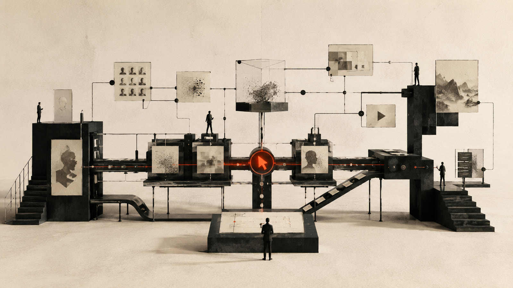
프롬프트를 잘 쓰는 사람이 되어야 한다는 말을 자주 듣는다. 틀린 말은 아니다. 다만 발표를 준비하며 자료를 모으다 보니, 이 말이 담는 범위가 생각보다 빨리 좁아지고 있다는 생각이 들었다. 프롬프트는 여전히 중요한데, 창작의 무게중심은 이미 그 다음으로 넘어가고 있었다. 한 줄의 명령어가 아니라, 생성과 선택과 수정이 이어지는 흐름 전체를 설계하는 일 쪽으로.

시리즈 안내 : 2025년 11월, 한 기업 워크숍에서 했던 발표 "AIGC 시장 트렌드 및 창작자 패러다임의 변화"를 다시 정리하는 세 편의 노트 중 두 번째다. 1편에서는 실력과 노력의 가치가 흔들리는 장면들, 그리고 AI를 도구가 아니라 새로운 미디어로 보자는 관점까지 다뤘다.
01프롬프트라는 언어, 그리고 읽지 않는 프롬프트
발표에서 나는 프롬프트를 이렇게 정의했다. 창작자의 의도와 감성을 언어에 압축해서 설계하는 일이라고.
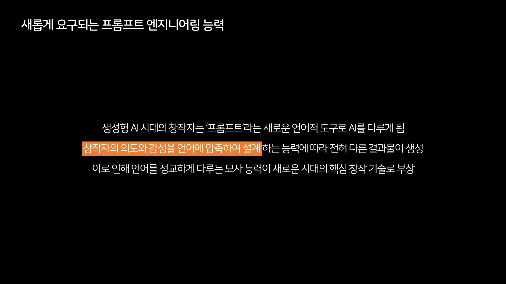
정의만 보면 대단히 정교한 언어 기술 같지만, 실제 풍경은 조금 다르다. 상세한 레퍼런스 프롬프트를 그대로 붙여넣으면 놀랄 만큼 일관성 있는 이미지가 나온다. 발표에서 예로 든 프롬프트는 모델의 포즈, 분홍색 자동차, 초록색 열쇠고리까지 하나하나 지정한 긴 문장이었다. 그런데 그런 문장을 직접 쓰는 사람은 많지 않다. 대개 누군가 공개해둔 것을 가져다 쓴다.
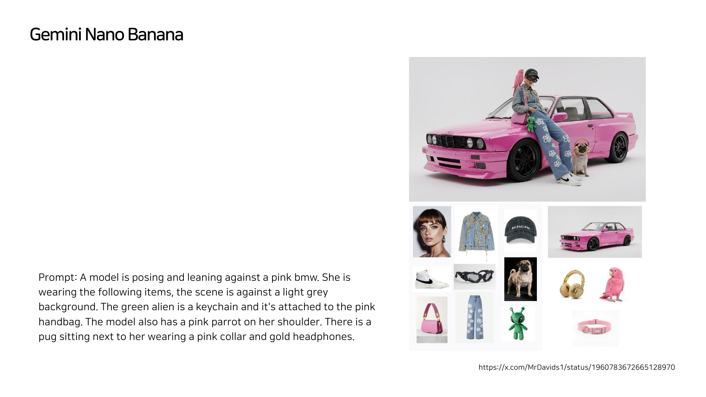
사물 몇 개와 문장 하나를 주면 완성된 컷이 돌아오기도 한다. 발표 전날 공개된 새 이미지 모델은 열몇 개의 레퍼런스를 한 번에 받도록 업그레이드되어 있었다. 도구가 좋아질수록 프롬프트를 정교하게 다듬는 부담은 오히려 줄어든다.
내가 더 흥미롭게 소개한 것은 구글 Flow의 TV 기능이었다. 화면을 띄우면 진짜 TV처럼 영상이 흘러나오고, 채널을 바꾸면 다른 테마가 나온다. 여기서 채널이란 하나의 프롬프트를 공유하며 리믹스되는 흐름이다. 옵션에서 프롬프트 보기를 켜면 지금 흐르는 영상의 프롬프트를 그대로 복사할 수 있다. 나는 채널을 탐색하다가 마음에 드는 영상의 프롬프트를 복사해서 붙여넣고, 비슷한 영상을 바로 얻었다.
재미있는 점은, 내가 그 프롬프트를 읽지 않는다는 것이다. 복사할 때도 읽지 않았고, 영상을 만들고 나서야 들여다보고, 아 이런 내용이었구나 하게 된다. 앞으로 더 많은 사람들이 이런 순서로 사고하게 될 것 같다. 최종 결과물을 먼저 보고, 마음에 들면 가볍게 리믹스하고, 그 다음에야 어떻게 만들어졌는지 의도 안으로 들어가 편집하는 순서. 프롬프트는 작성하는 언어이면서, 점점 더 물려받는 언어가 되어간다.
02평가가 먼저 일어나는 창작
이 순서 바뀜을 발표에서는 비선형 프로세스라고 불렀다. 예전에는 뭔가를 만들어 전달하고, 감상자가 받아본 뒤에야 평가가 일어났다. 지금은 평가가 먼저 일어난다. 남들이 만든 결과물 중에서 마음에 드는 것을 고르는 일 자체가 창작의 첫 단계가 되었기 때문이다. 그 다음에 감상이 있고, 제작이 있고, 다시 감상이 있다.
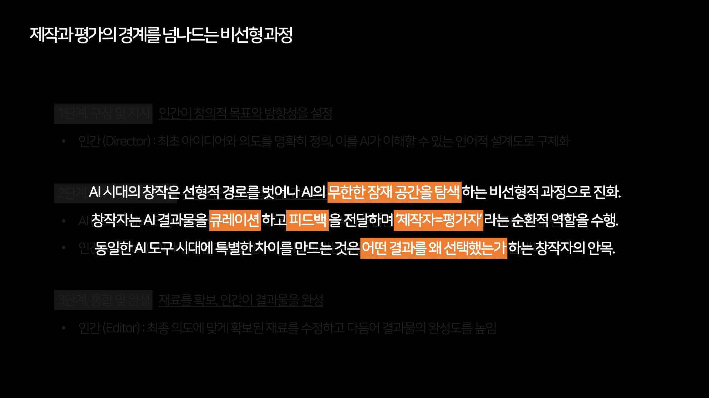
그래서 나는 발표에서 이렇게 말했다. AI는 무한한 잠재공간이고, 나는 제작자이지만 동시에 앞부분에서는 큐레이터라고. 좋은 결과물을 빠르게 골라 피드백을 주거나 변형하고, 마지막에 전문적인 기술로 마무리하는 방식이다. 여기서 중요한 것은 내가 왜 그것을 선택했는지 설명할 수 있어야 한다는 점이다. 의도를 이야기하지 않으면 여전히 저평가받는다. 1편에서 노력의 증명이 어려워졌다고 썼는데, 같은 문제가 여기서는 선택의 증명이라는 형태로 돌아온다.
발표에서는 데이브 클라크(Dave Clark)가 소라2로 만든 단편을 소개했다. 개인이 생성 모델만으로 단편 한 편을 끝까지 끌고 간 사례다. 이런 작업이 나오면 사람들은 대개 완성도를 먼저 보는데, 나는 그 다음에 벌어지는 일이 더 흥미로웠다.
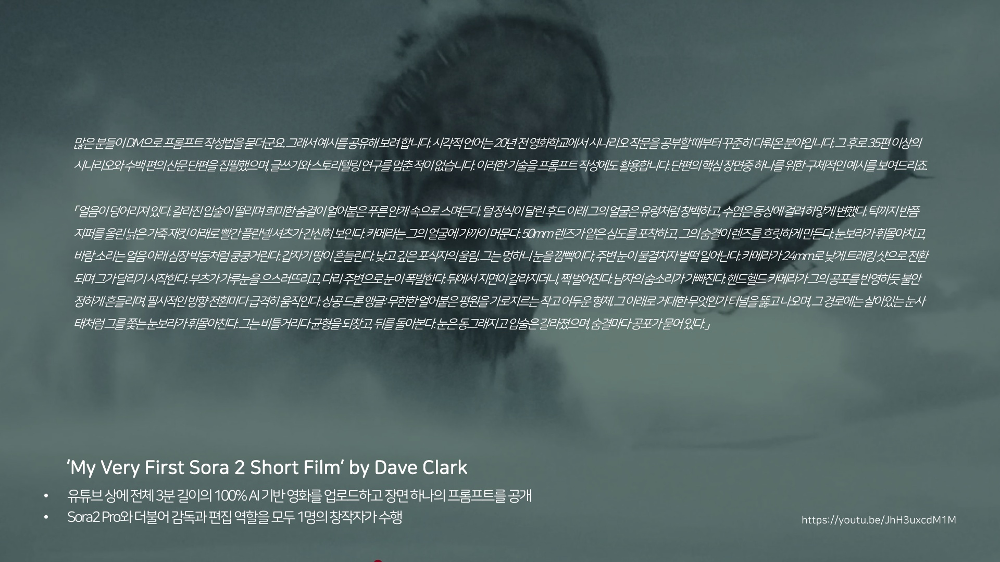
유튜브에서 어떤 사람이 생성 모델로 3분짜리 장편 영상을 만들고, 마지막 컷의 프롬프트를 공개해둔 것을 봤다. 나는 그 프롬프트를 가져와 이미지를 분석시키고, 다음 장면이 어떻게 흘러갈지에 대한 프롬프트를 다시 얻어내고, 그것을 입력하는 방식으로 그 영상의 한 장면에서 새 영상을 파생시켜 봤다. 누구나 영상으로부터 또 다른 영상을 가지치기할 수 있는 단계가 된 것이다. 완성된 작품이 끝이 아니라 다음 사람의 출발점이 된다는 뜻이기도 하다.
03도구에서 동료로, 동료에서 공동창작자로
워크플로우 도구들 이야기를 해야 할 차례다. 발표에서 소개한 플로라(Flora) 같은 툴은 캔버스 위에 모델들을 노드로 늘어놓고 흐름을 정의한다. 흥미로웠던 것은 이 툴의 이름이 나이키의 채용공고에 자격 요건으로 올라가 있었다는 점이다. 예전 같으면 "생성 모델 쓸 줄 아는 사람"이라고 적으면 이상했을 텐데, 이제는 특정 워크플로우 툴의 이름이 포토샵처럼 적히기 시작했다.
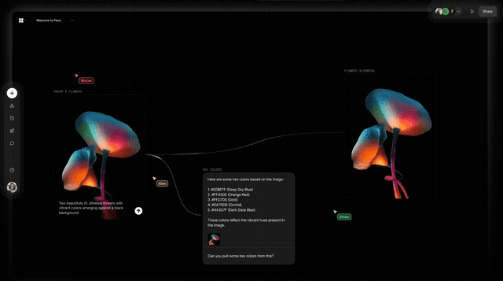
작업창에는 여러 개의 커서가 동시에 움직인다. 디자이너들이 협업 툴에서 익숙하게 보던 풍경인데, 다른 점이 하나 있다. 저 커서 중 몇 개는 사람이 아닐 수 있다. AI 에이전트가 동료가 되어 실시간으로 같이 작업하는 것이다. 발표에서 나는 이 동료의 성격을 이렇게 설명했다. 영감을 주기도 하고, 가끔 질투심을 일으키기도 하는데, 쉬지 않는다. 그리고 돈을 넣으면 개수를 늘릴 수 있다.
이 대목에서 나는 조금 불편한 이야기를 하나 얹었다. 창의력이 돈으로 치환되기 시작했다는 것이다. 컴퓨팅 파워라는 개념에서는 이미 유효한 이야기가 되어버렸다. 병렬로 일을 시키는 것뿐 아니라, 성능을 돈으로 극단적으로 끌어올렸을 때 창의력이라고 부를 만한 것이 창발되는 장면들을 보게 된다.
이 말에는 근거를 하나 붙였다. AI에게 창의성이라는 개념이 존재할 수 있는가를 두고, 조합적 창의성(combinational creativity)에서 자율적 창의성(autonomous creativity)으로 넘어가는 중이라는 구분을 소개했다. 있는 것들을 새롭게 조합하는 단계와, 스스로 새로운 것을 세우는 단계를 나눈 것이다.
뒷단계의 증거로 든 것은 한 연구였다. AI가 자기 자신의 신경망 구조를 찾아 나선 실험인데, 2만 GPU 시간 동안 자율 실험을 돌려 사람의 지식 총합에 없던 아키텍처 106개를 발견했다. 알파고가 사람이 보지 못한 수를 두었던 순간에 빗댄 제목이 논문에 붙어 있었다. 내가 장표에 밑줄을 그은 문장은 이것이다. 혁신이 인간의 창의성이 아니라 컴퓨팅 예산에 의해 확장될 수 있음을 처음으로 증명한 사례라는 것.
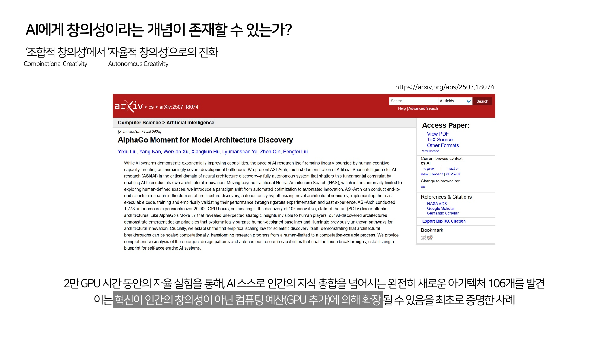
GPU를 더 태우면 발견이 늘어난다는 말은 창작하는 사람에게 유쾌하게 읽히지 않는다. 다만 불편하다고 없던 일이 되지는 않는다. 받아들이기 편한 이야기는 아니지만, 이것을 받아들여 공동창작자까지 가지 않으면 난항이 예상된다는 것이 발표 당시 나의 판단이었다. 물론 자기 영역을 고유하게 지켜가는 창작자들도 있을 것이다. 다만 그때 인간의 고유성을 어떻게 유지하고 어떻게 설득할 것인가가 남는 숙제가 된다.
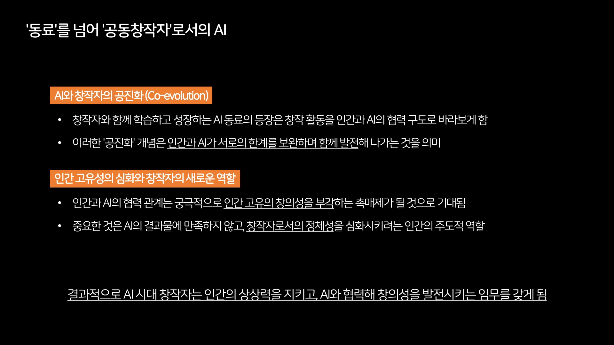
공동창작의 실감은 뮤직비디오 제작 데모에서 가장 선명했다. 모티브 사진 한 장에서 스타일을 뽑아 앨범 재킷을 만들고, 그 이미지가 가진 감정을 읽어 음악을 생성하고, 그것들을 비디오로 통합한다. 전체 플로우 돌리기를 누르면 크레딧이 쫙 빠져나간다. 병렬은 순서를 기다리지 않는다. 돈을 한 번에 태워서 50개를 만들면 50개가 나온다.
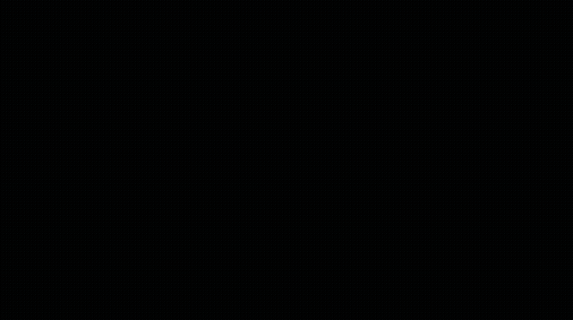
그 데모의 제목이 마음에 남았다. Lyric to Music Video. 가사에서 뮤직비디오를 만든다는 뜻이다. 전통적인 순서라면 가사가 나오고, 노래를 만들고, 보컬이 부르고, 그 다음에 영상이 붙는다. 여기서는 가사에서 영상을 만들고, 영상에서 노래를 만든다. 프로세스들이 얽히고 순서가 바뀌고 역할이 교체된다. 개인적으로는 이런 창작이 나쁘지 않다고 생각한다. 영상을 잘 만드는 사람은 노래를 못 만들어도 자기 뮤직비디오를 가질 수 있게 되었고, 가사를 잘 쓰는 사람도 마찬가지다. 시작하는 지점은 달라도 결과물의 포맷은 비슷해질 수 있는 시대다.
04슈퍼 창작자, 그리고 새로운 양극화
이 흐름의 그림자도 발표에서 그대로 이야기했다. 막내 작가가 스토리보드를 넣었더니 감독이 전통적인 방식으로 만든 것보다 낫다는 평가가 나와버리면, 회사 안의 위계가 무너진다. 막내 작가는 바로 독립해서 스튜디오를 차렸다가, 아직은 아니네 하고 재입사하는 시나리오까지, 지금 실제로 벌어지고 있는 일들이다.
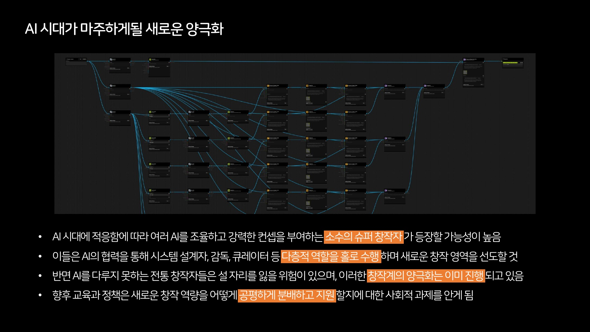
결국 우리가 만나게 되는 것은 소수의 슈퍼 창작자가 주도하는 새로운 시장이라고 생각한다. 자본 규모가 큰 전통 시장은 그대로 가겠지만, 니치한 시장에서는 혼자서 전체 프로세스를 가져가면서 퀄리티도 좋고 실행도 빠른 사람들이 먼저 자리를 잡는다. 안 유명한데 왜 더 인기가 많지, 왜 쟤네가 돈을 더 잘 벌고 있지. 이런 질문이 나오는 시장에서는 기존에 쌓아놓은 권위와 실력이 무용지물이 되기도 한다. 곧 상황이 어느 정도 정리되지 않을까 싶지만, 그래서 사회적 장치와 교육과 정책이 중요해지는 시점이기도 하다.
05숨어 쓰던 도구가 커뮤니티가 될 때
이 도구들이 처음부터 당당하게 쓰인 것은 아니다. 초반에 게임 회사 아트팀에서 사용 통계를 냈더니 비중이 너무 낮게 나왔는데, 알고 보니 다들 숨어서 쓰고 있었다는 이야기를 발표에서 했다. 나는 이런 거 쓰지 않아, 이건 나의 가치를 떨어뜨리는 거야. 그렇게 선언하던 사람들이 수면 위로 올라와 다시 모이는 곳이 커뮤니티다.
이미지 생성 도구 중에 나는 미드저니를 독보적이라고 본다. 이 회사는 툴 단위로는 굉장히 폐쇄적이다. 자기네 생성 모델을 다른 툴에서 못 쓰게 막아놨다. 대신 안에서는 사용자들끼리 굉장히 개방적으로 공유하는 문화가 있다. 시작 자체를 채팅 커뮤니티 안에서 했고, 거기서 실험하면서 제품화했다. 이미지를 한 번에 4장씩 생성하는 것도, 뭘 좋아할지 몰라서 일단 만들어 봤어, 그 느낌에 가깝다. 4개 중 하나를 고르는 행위가 곧 취향의 학습이 된다.
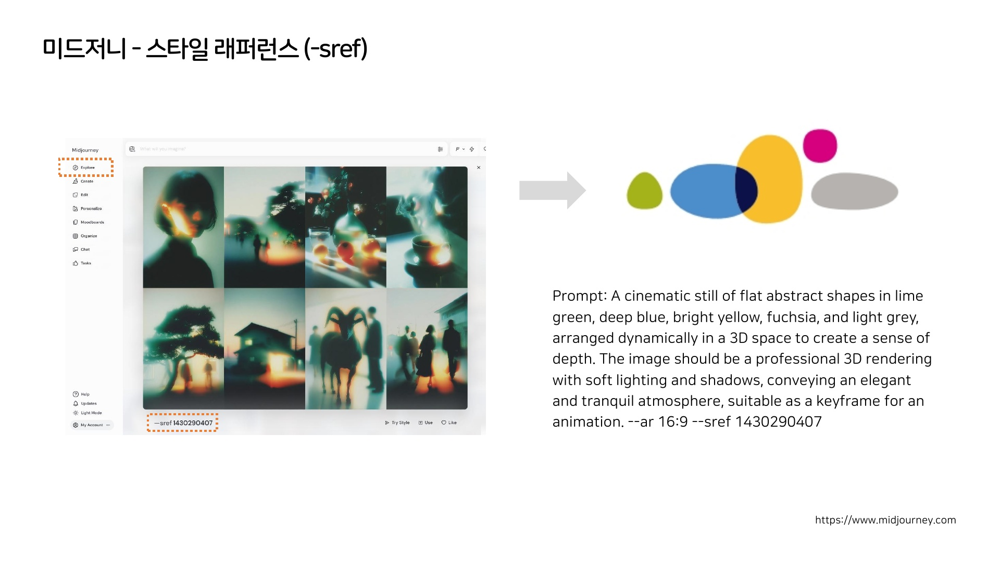
내가 학습시킨 스타일을 넣어 결과물에 입힐 수도 있고, 누군가 만들어둔 스타일 코드를 가져와 쓸 수도 있다. 스타일이 코드가 되어 돌아다니는 것이다.
이 회사는 오래전부터 피지컬 잡지를 만들어 실제 배송까지 해왔다. 화면 안에서 무한히 생성되는 것들을 굳이 종이로 눌러 담아 집으로 보내는 일인데, 생성이 흔해질수록 이런 선택이 더 눈에 띈다.
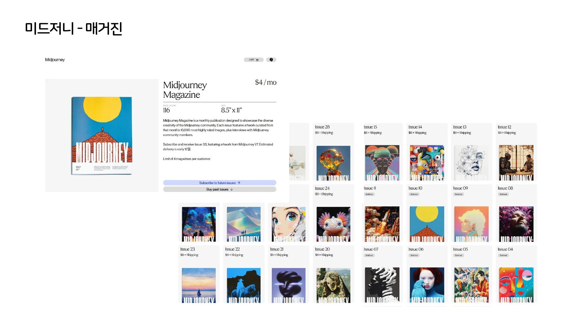
최근에는 유저 프로필도 공개했다. 예전 포트폴리오 플랫폼에서 유명하지 않던 사람이 여기서는 네임드가 될 수 있는 새로운 기회가 열린다. 어디에서 알려졌느냐가 사람마다 달라지는 시대이고, 그 무대가 하나 더 생긴 셈이다.
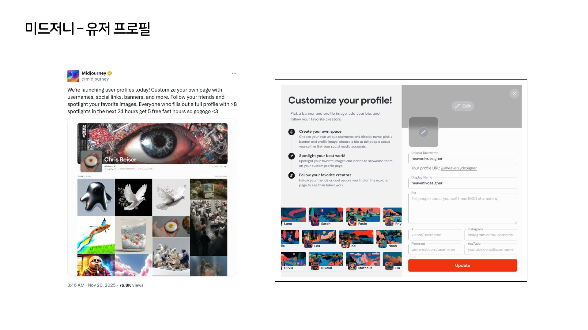
개발사들이 창작자를 대하는 방식도 같은 방향이다. 발표에서 나는 두 회사, 소라를 만든 오픈AI와 런웨이를 주목하고 있다고 말했다. 한쪽은 새 영상 모델이 나오기 전에 창작자들에게 먼저 도구를 주고, 교육을 돕고, 결과물을 대형 미디어 파사드에 프로젝션하는 레지던시 프로그램을 운영했다. AI를 가장 잘 쓰는 사람들을 먼저 선점하는 전략이다.
그 프로그램의 첫 번째 랩이 서울에서 열렸다. 스물한 명의 아티스트가 한 달 동안 도구를 붙들고 새 프로젝트를 만드는 자리였고, 아티스트가 주도하고 도구가 따라갈 때 새로운 형태가 나온다는 문장이 안내문에 적혀 있었다. 발표 자리에서 이 대목을 소개하면서, 이런 일이 남의 나라 이야기로만 지나가지 않는다는 점을 짚었다. 다른 한쪽은 영상 리믹스에 강한데, 사진 한 장을 올려놓고 창작자들에게 갖고 놀아보세요 하면 누군가는 불을 지르고 누군가는 로켓을 띄운다. 그것이 합쳐지면 공동창작 결과물이 된다. 일상 영상의 모든 사람을 팬더로 바꾸는 데모도 있었다. 어디서 생성됐는지 모를 근본 없는 배경이 아니라 내 일상 공간이 변한다는 느낌은 확실히 다르다. 이 회사들의 고유 기능들은 창작자 커뮤니티가 실제로 필요로 하는 것을 빨리 파악해 기능화한 결과이고, 나중에는 다른 곳에서도 쓸 수 있게 열어준다.
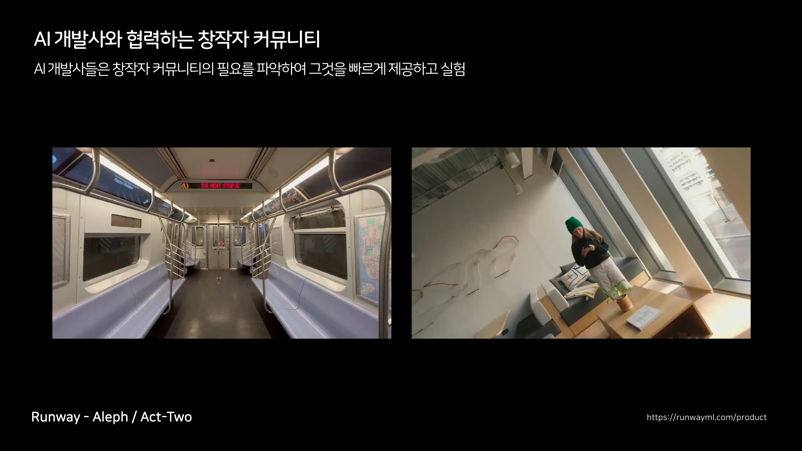
거기서 한 걸음 더 나간 것이 창작자가 자기 앱을 직접 만들도록 열어준 기능이다. 배경만 바꾸는 작은 도구 같은 것을 스스로 만들어 쓰고, 남에게도 쓰게 한다. 도구를 주는 데서 그치지 않고 도구 만드는 자리까지 내주는 셈인데, 이쯤 되면 사용자와 개발사의 경계도 흐려진다.
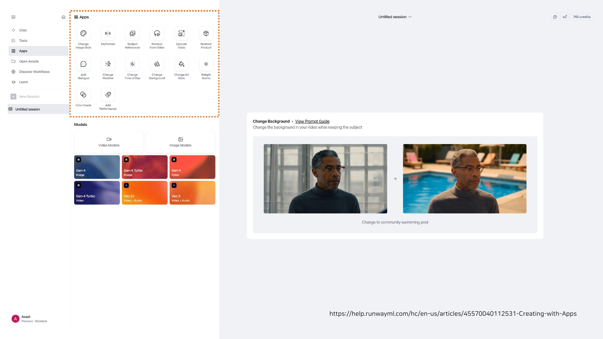
커뮤니티의 요구가 도구가 되고, 도구가 다시 커뮤니티를 키운다.
06학습당하는 창작물
다만 이 순환에는 대가가 있다. 먼저 써보게 해주는 만큼, 창작자들의 결과물은 모두 학습당하고 있다. 그래서 데이터 주권이라는 말이 다시 부각된다. 동의하는 사람과 동의하지 않는 사람으로 창작자들은 지금 둘로 갈리고 있다. 돈을 주면 열어주겠다는 사람도 있고, 기꺼이 기여하겠다는 사람도 있다. 주로 후발주자일수록 자신을 개방해서 더 빨리 기회를 만들려는 성향이 있는 것 같다.
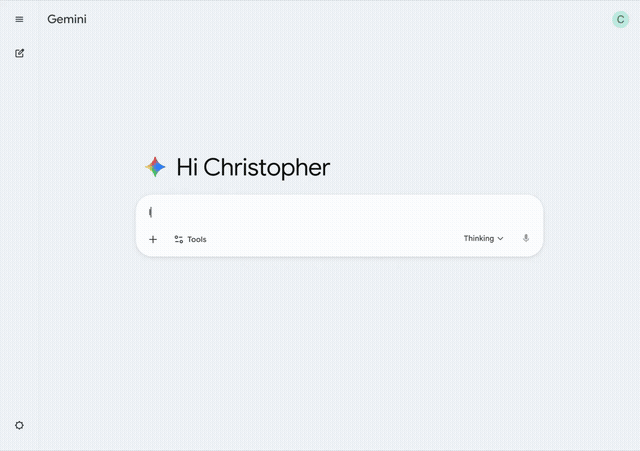
한쪽에서는 보이지 않는 안전장치도 만들어지고 있다. 어떤 이미지를 AI에게 주고 물어보면, 그것이 생성된 것인지 알려준다. 영상과 이미지에 보이지 않는 워터마크가 새겨져 있기 때문이다. 1편에서 진정성마저 생성될 수 있다고 썼는데, 그 반대편에서 진본성을 기계가 증명해주는 인프라가 같이 자라고 있는 셈이다. 어느 쪽이 먼저 자리 잡을지는 아직 모르겠다.
정리하면 이렇다. 프롬프트는 시작이었고, 지금 벌어지는 일은 창작의 단위가 문장에서 흐름으로 바뀌는 것이다. 무엇을 연결하고, 무엇을 병렬로 돌리고, 어디에 사람의 판단을 끼워 넣을지. 그 흐름의 설계가 창작 역량의 새 이름이 되어가고 있다.
그런데 흐름의 설계가 끝이 아니었다. 발표를 준비하며 나는 그 다음 단계가 이미 오고 있다는 것을 느꼈다. 흐름이 결과물을 만드는 데서 멈추지 않고, 아예 세계를 만들기 시작하는 단계다. 기억과 물리 법칙과 상호작용을 가진 세계. 다음 편에서 그 이야기를 하려 한다.
창작의 단위는 문장에서 흐름으로, 그리고 흐름에서 세계로 넓어지고 있다.